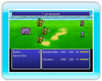

21 |
Der Kampfbildschirm / Wie man kämpft |
 |
|
Wenn du auf einen Gegner triffst (entweder auf der Weltkarte oder als Teil der Geschichte), erscheint der Kampfbildschirm. Während eines Kampfes vergeht die Zeit weiter und wenn die ATB-Anzeige (Active Time Battle / Kampfaktionszeitpunkt) eines Charakters ihr Maximum erreicht, ist er an der Reihe. ● „Battle Commands“ (Kampfbefehle)Über dieses Menü kannst du deinen Charakteren während eines Kampfes Befehle geben (-> S. 22). Ist der „Battle Mode“ (Kampfmodus) auf „Active“ (Aktiv) gestellt, läuft die Zeit weiter, während du die Kampfbefehle auswählst (-> S. 20).
● ReihenfolgeWenn bei zwei oder mehr Charakteren die ATB-Anzeige voll ist, drücke ● KampfregelnBesiegst du alle Gegner, hast du den Kampf gewonnen. Ist die gesamte Gruppe „KO“ (Kampfunfähig) oder versteinert, ist das Spiel zu Ende. Die ATB-AnzeigeDie ATB-Anzeige gibt an, wie viel Zeit vergehen muss, bevor die ausgewählte Aktion durchgeführt wird. Sie zeigt nicht nur, wie lange es noch dauert, bis ein Charakter einen Kampfbefehl auswählen kann, sondern auch, wie lange es noch dauert, bis eine Fertigkeit, ein Spezialangriff oder eine andere Aktion durchgeführt werden kann.

● Wenn es an der Zeit ist, wegzurennen ...Halte

● KampfendeNach Gewinn eines Kampfes erhältst du Erfahrungspunkte und Gil sowie zu bestimmten Gelegenheiten Items und Schätze.
|

 |
 |
 |